# Install required libraries (if not already installed)
#install.packages(c("ggplot2", "corrplot", "ggcorrplot",
#"PerformanceAnalytics", "GGally", "psych", "corrr"))
# Load necessary libraries
library(ggplot2)
library(corrplot)
library(ggcorrplot)
library(PerformanceAnalytics)
library(GGally)
library(psych)
library(corrr)Exercise 2.2 — Correlation and missingness
Overview
This is a showcase of the great amount of resources available in open-source programming languages, where new packages are developed and made available constantly publically. As key insight, EXPLORE, probably what you need is already out there for you to use!
Correlation
For you to see the breadth of possibilities out there, here is an example of different ways in which to describe and learn about the correlation matrix of your dataset.As you can see different packages have been developed for the same purpose but hold different functions and approaches.
To assess the association between two variables, you can produce a scatter plot like below:
set.seed(123)
x <- rnorm(100)
y <- x + rnorm(100, sd = 0.5)
ggplot(data = data.frame(x, y), aes(x = x, y = y)) +
geom_point(color = "blue", size = 2) +
geom_smooth(method = "lm", color = "red", se = FALSE) +
labs(title = "Correlation Plot with ggplot2",
x = "X values", y = "Y values") +
theme_minimal()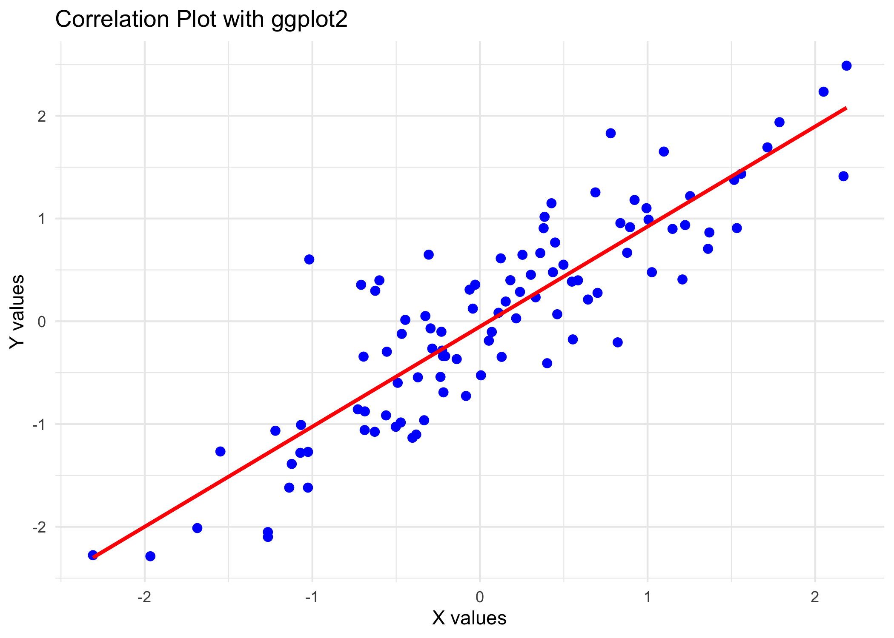
Now we are going to produce the correlation matrix, where in a go, you get insight of all the association happening in your dataset.For this we are going to use the mtcars data (A built-in dataset that contains measurements on 11 different attributes for 32 different cars). More specifically, the chosen variables are:
mpg (Miles per Gallon): Represents the fuel efficiency of the car. Higher values, better efficiency.
disp (Displacement): Represents the engine displacement, which is the total volume of all the cylinders in the engine.
hp (Horsepower): Represents the power output of the car’s engine.
wt (Weight): Represents the weight of the car.
data <- mtcars[, c("mpg", "disp", "hp", "wt")]Can you calculate the correlation between them? Try out at least a pair of functions/packages. Remember there are different ways in which to calculate correlation https://www.sthda.com/english/wiki/correlation-test-between-two-variables-in-r and you can specify the type in your code cor(x, y, method = c("pearson", "kendall", "spearman"))
Now that you know what to expect, lets proceed with the correlation matrices (same thing as above, but all in a go!):
—–corrplot Correlation Matrix —–
cor_matrix <- cor(data)
corrplot(cor_matrix, method = "circle", type = "upper",
title = "Correlation Matrix", addCoef.col = "black")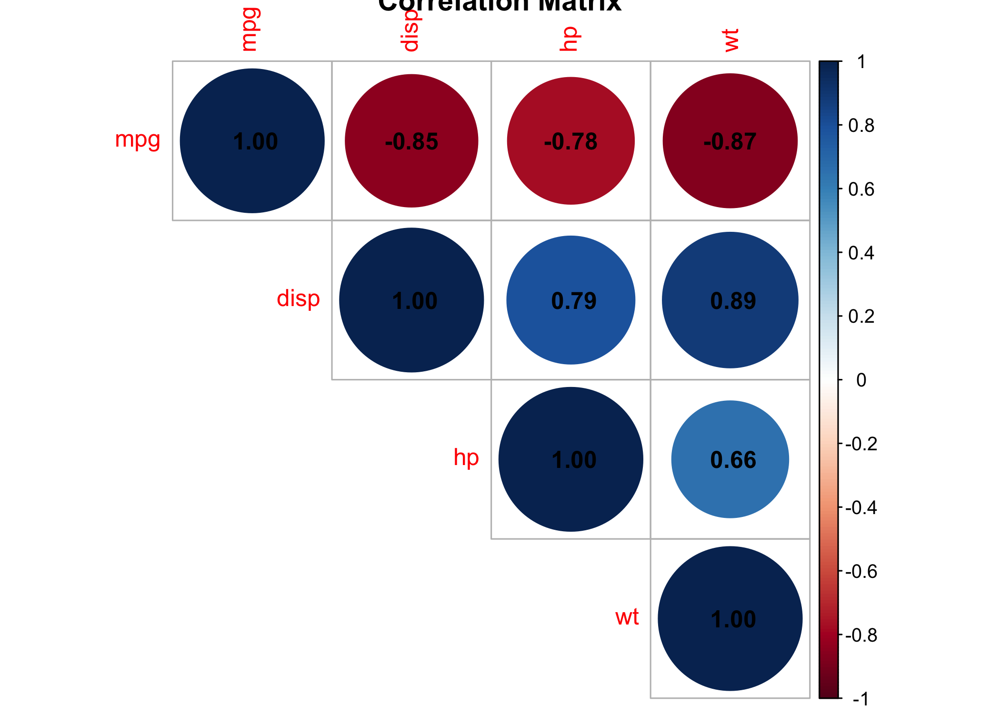
—–corrplot Correlation Matrix —–
ggcorrplot(cor_matrix,
method = "square",
type = "lower",
lab = TRUE,
title = "mtcars",
lab_size = 3) +
theme_minimal()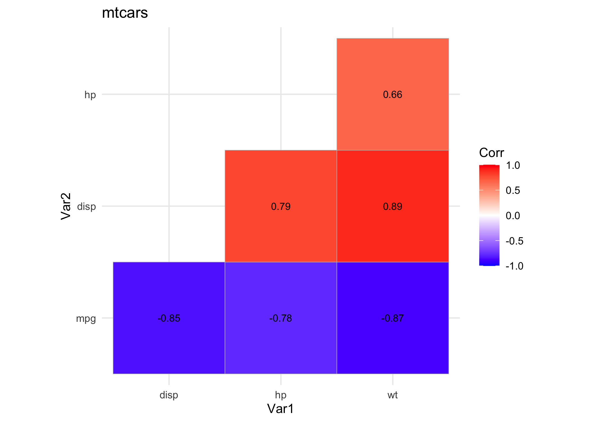
—–PerformanceAnalytics Pairwise Correlation Plot —–
chart.Correlation(data, histogram = TRUE, pch = 19)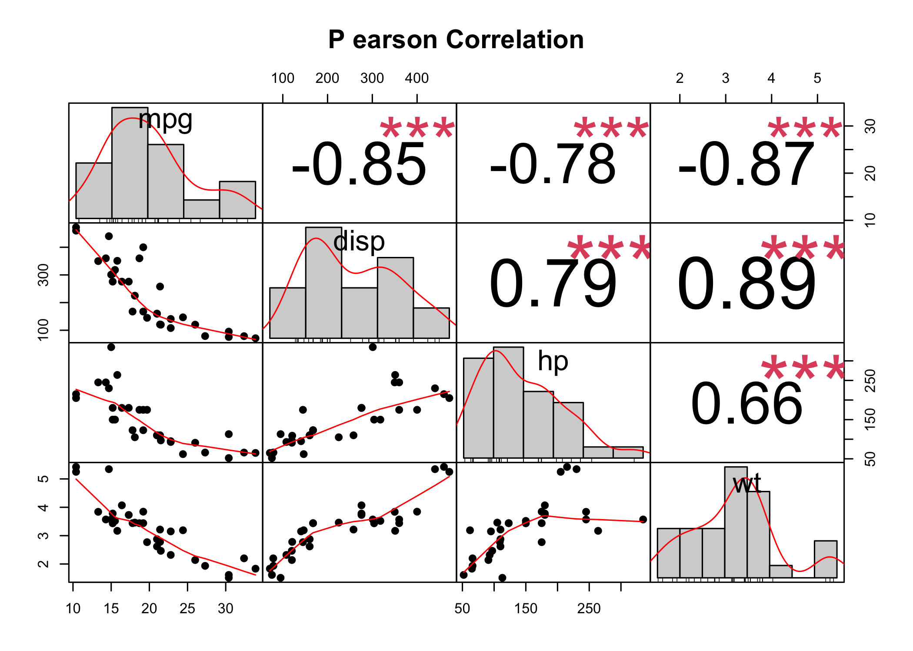
###—–GGally Pairwise Correlation Plot —–
ggpairs(data,
title = "Pairwise Correlation Plot with GGally",
lower = list(continuous = wrap("smooth", method = "lm")),
upper = list(continuous = wrap("cor", size = 3)))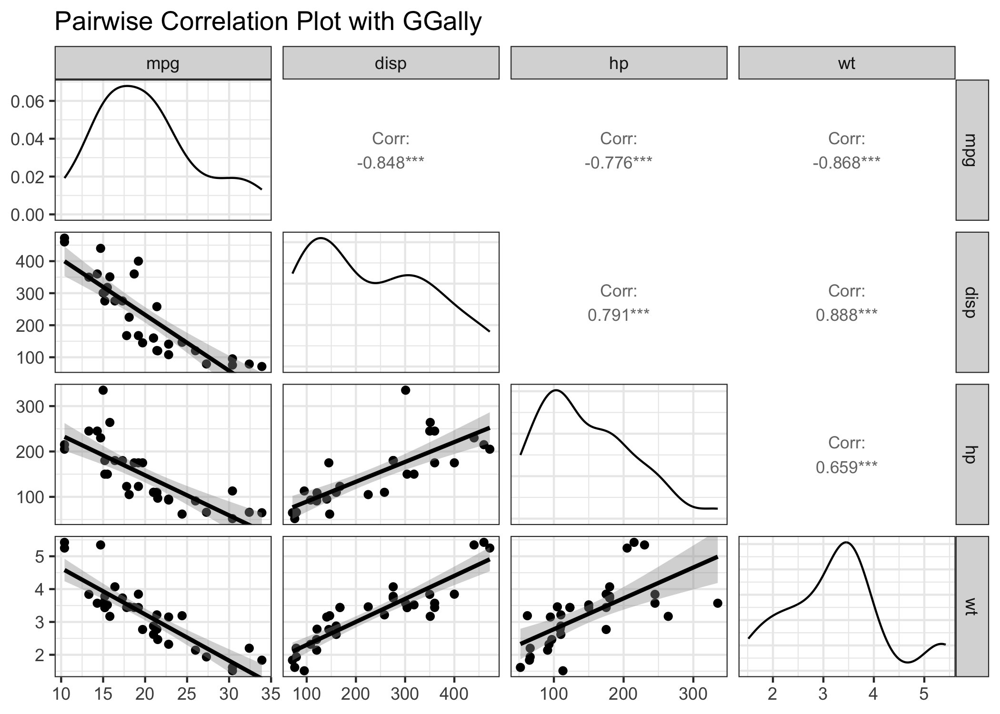
###—– psych Enhanced Pairwise Correlation Plot —–
pairs.panels(data,
method = "pearson",
hist.col = "lightblue",
density = TRUE,
ellipses = TRUE)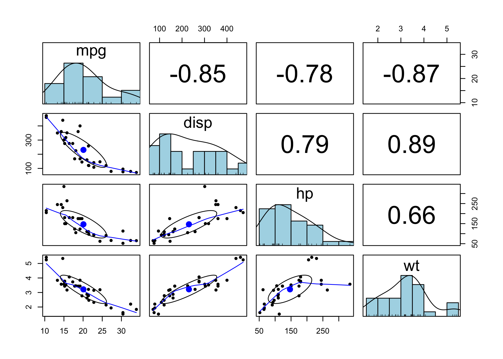
###—– Base R Heatmap —–
# ----- 8. Base R Heatmap -----
heatmap(cor_matrix, symm = TRUE,
main = "Correlation Heatmap",
col = colorRampPalette(c("red", "white", "blue"))(20))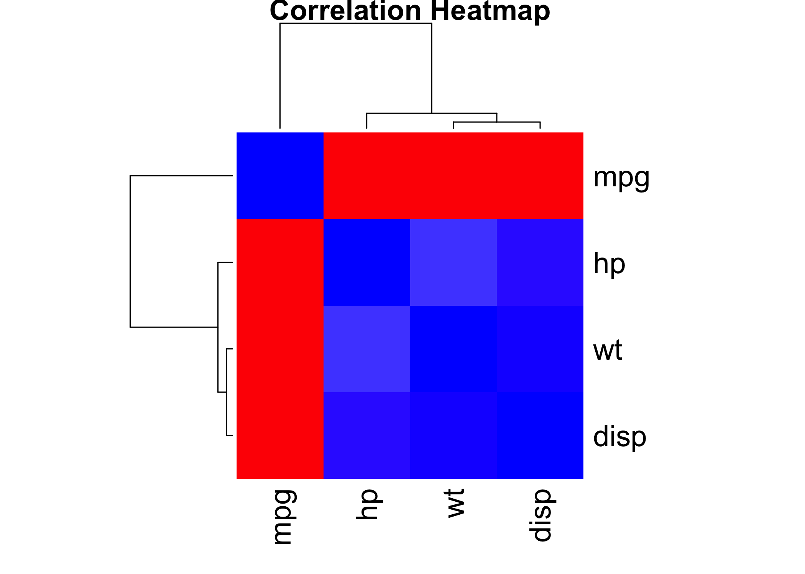
# ----- 10. corrr Tidy Correlation -----
cor_matrix_tidy <- correlate(data)
cor_matrix_tidy %>%
fashion() %>%
print()#> term mpg disp hp wt
#> 1 mpg -.85 -.78 -.87
#> 2 disp -.85 .79 .89
#> 3 hp -.78 .79 .66
#> 4 wt -.87 .89 .66# Network-style correlation plot
cor_matrix_tidy %>%
network_plot(min_cor = 0.3)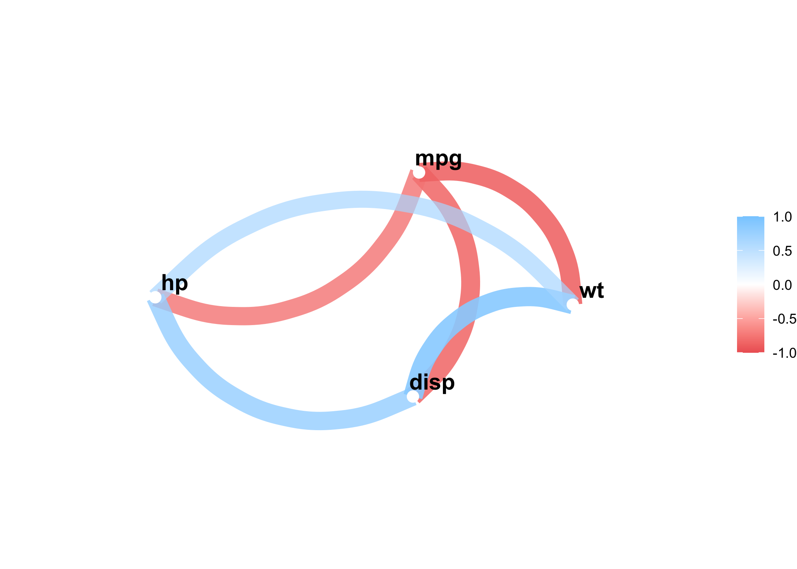
What are your insights? Do they make sense? Remember:
mpg (Miles per Gallon): Represents the fuel efficiency of the car. Higher values, better efficiency.
disp (Displacement): Represents the engine displacement, which is the total volume of all the cylinders in the engine.
hp (Horsepower): Represents the power output of the car’s engine.
wt (Weight): Represents the weight of the car.
Missing pipelines
As with the correlation matrices before, there are really good packages to help you understand the missingness structure of your data. This is my recommendation:
#Remember, if you do not have these packages installed, install them first with (install.packages())
library(naniar)
library(finalfit)
library(ggplot2)
library(mice)Here I will be using the airquality dataset (available as default in all R) but can rerun using your own dataset in a future.
summary(airquality)#> Ozone Solar.R Wind Temp
#> Min. : 1.00 Min. : 7.0 Min. : 1.700 Min. :56.00
#> 1st Qu.: 18.00 1st Qu.:115.8 1st Qu.: 7.400 1st Qu.:72.00
#> Median : 31.50 Median :205.0 Median : 9.700 Median :79.00
#> Mean : 42.13 Mean :185.9 Mean : 9.958 Mean :77.88
#> 3rd Qu.: 63.25 3rd Qu.:258.8 3rd Qu.:11.500 3rd Qu.:85.00
#> Max. :168.00 Max. :334.0 Max. :20.700 Max. :97.00
#> NA's :37 NA's :7
#> Month Day
#> Min. :5.000 Min. : 1.0
#> 1st Qu.:6.000 1st Qu.: 8.0
#> Median :7.000 Median :16.0
#> Mean :6.993 Mean :15.8
#> 3rd Qu.:8.000 3rd Qu.:23.0
#> Max. :9.000 Max. :31.0
#> We can already see with a simple summary, the ammount of missings we have per column. But what is their underlying structure?
YourDataset <- airqualityPlot 1
ll <- data.frame(is.na(YourDataset))Open up this ll object. What are you seeing here? is.na() detects all values coded as NA and gives a logical output, TRUE if truly a missing value and FALSE if not
View(ll)cols <- sapply(ll, is.logical)
ll[, cols] <- lapply(ll[, cols], as.numeric)
Miss1 <- UpSetR::upset(ll,
nsets = 20, number.angles = 10, point.size = 3.5, line.size = 2,
mainbar.y.label = "Missing Values", sets.x.label = "Total Number Missing Values",
text.scale = c(2.3, 2.3, 2, 2, 2, 1.75), order.by = "freq", sets.bar.color = "red3"
)
Miss1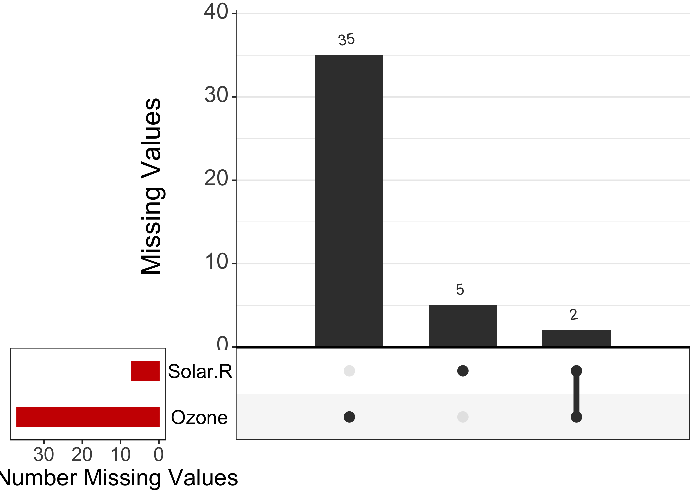
Here we can see common patterns! If missing values were to happen at the same time in different variables, we would see it clearly. Lets store this figure into our own directories so we can then use it for our final research output!
pdf("MissingVal1.pdf", 10, 20)
print(Miss1)
dev.off()Plot 2
print(vis_miss(YourDataset, warn_large_data = FALSE) +
theme(axis.text.x = element_text(angle = 90)))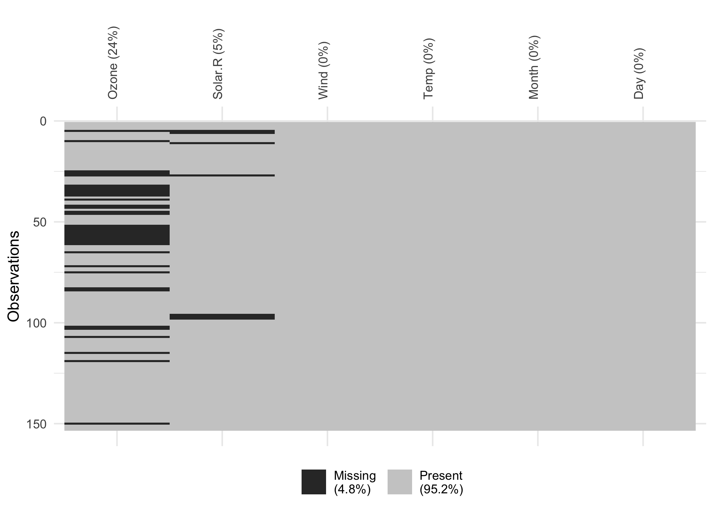
# uncomment to have your pdf created
#pdf("Missing2.pdf", 20, 10)
#print(vis_miss(YourDataset, warn_large_data = FALSE) +
# theme(axis.text.x = element_text(angle = 90)))
#dev.off()Very clear outline of missingness in the whole dataset. But be careful in big datasets!
Plot 3
missing_pattern(YourDataset)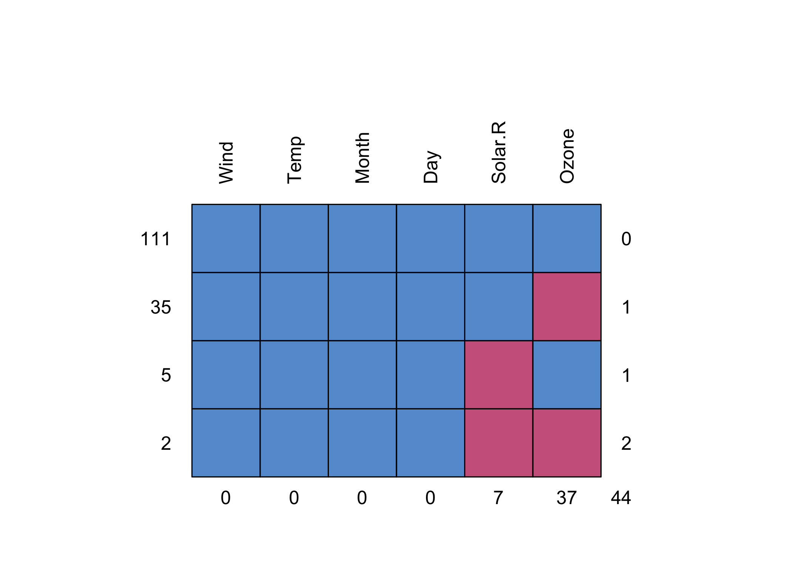
#> Wind Temp Month Day Solar.R Ozone
#> 111 1 1 1 1 1 1 0
#> 35 1 1 1 1 1 0 1
#> 5 1 1 1 1 0 1 1
#> 2 1 1 1 1 0 0 2
#> 0 0 0 0 7 37 44# uncomment to have your pdf created
#pdf("PlotMissing3.pdf", 4,11)
#
#print(missing_pattern(YourDataset))
#
#dev.off()
#Final, very clear overview of patterns per variable. Spend a moment trying to understand these values. This function works great with big datasets too, although sometimes it gets a bit busy with lots of numbers.
Open up your three newly created pdfs! (remember to uncomment the pdf() lines)
The same two ideas but with python equivalent. mtcars and airquality are built into R; in Python the equivalents come from the data folder you downloaded.
import pandas as pd
import numpy as np
import matplotlib.pyplot as plt
import seaborn as sns
diabetes = pd.read_csv("data/diabetes.csv")
heart = pd.read_csv("data/longisland_heart.csv")Correlation
pandas computes the matrix; seaborn draws it. These two are the equivalent of corrplot and ggcorrplot.
cols = ["glucose", "pressure", "triceps", "insulin", "mass"]
cor = diabetes[cols].corr()
fig, ax = plt.subplots(figsize=(5.5, 4.5))
sns.heatmap(cor, annot=True, fmt=".2f", cmap="RdBu_r", vmin=-1, vmax=1, ax=ax)
plt.show()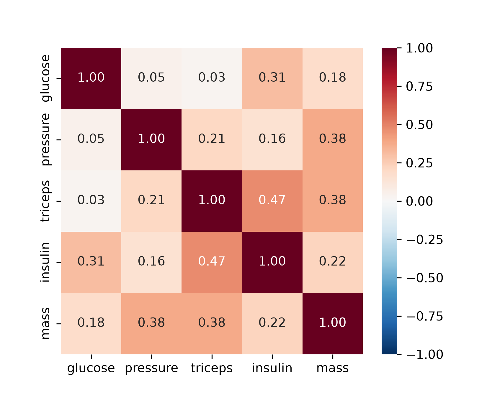
pairplot is the equivalent of ggpairs() and pairs.panels():
sns.pairplot(diabetes[["glucose", "insulin", "mass"]],
plot_kws=dict(alpha=0.3, s=12), height=1.9)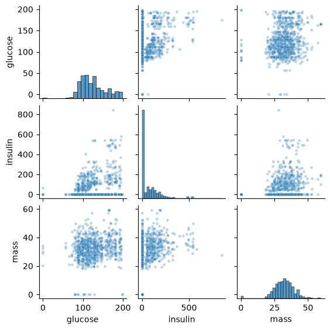
plt.show()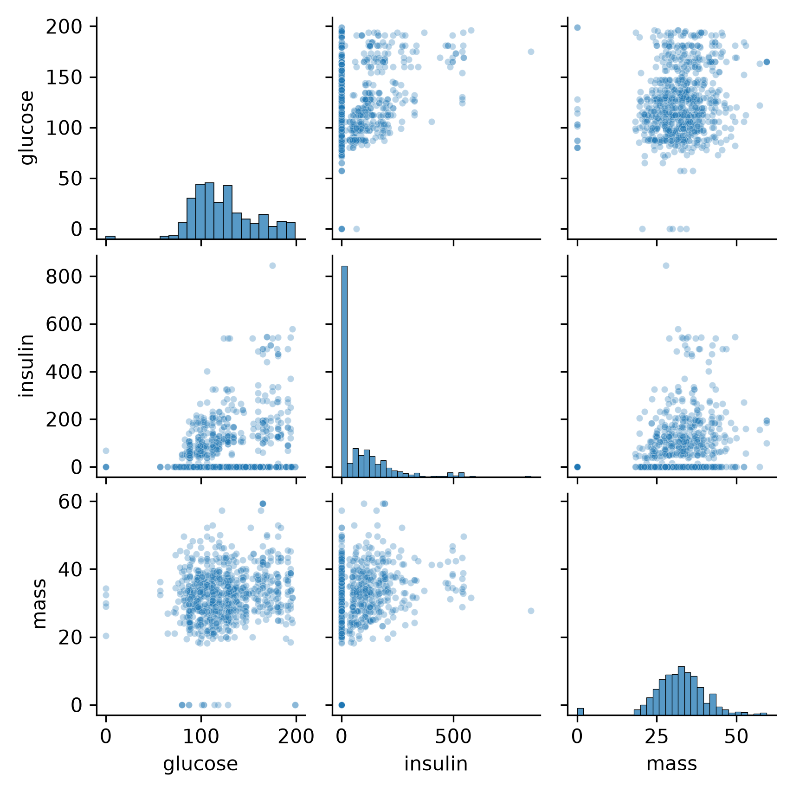
And the same comparison as above — the matrix before and after the impossible zeros become missing. .corr() drops missing pairs by default, which is what use = "pairwise.complete.obs" does in R.
dia_na = diabetes.copy()
dia_na[cols] = dia_na[cols].replace(0, np.nan)
print(diabetes[cols].corr().round(2))#> glucose pressure triceps insulin mass
#> glucose 1.00 0.05 0.03 0.31 0.18
#> pressure 0.05 1.00 0.21 0.16 0.38
#> triceps 0.03 0.21 1.00 0.47 0.38
#> insulin 0.31 0.16 0.47 1.00 0.22
#> mass 0.18 0.38 0.38 0.22 1.00print(dia_na[cols].corr().round(2))#> glucose pressure triceps insulin mass
#> glucose 1.00 0.09 0.16 0.52 0.19
#> pressure 0.09 1.00 0.11 0.13 0.24
#> triceps 0.16 0.11 1.00 0.17 0.61
#> insulin 0.52 0.13 0.17 1.00 0.20
#> mass 0.19 0.24 0.61 0.20 1.00Missingness
Counts per column, then the whole file as an image — the equivalent of vis_miss():
print(heart.isna().sum())#> age 20
#> sex 20
#> cp 20
#> trestbps 20
#> chol 20
#> fbs 20
#> restecg 20
#> thalach 20
#> exang 20
#> oldpeak 20
#> slope 20
#> ca 20
#> thal 20
#> diagnosis of heart disease 0
#> dtype: int64fig, ax = plt.subplots(figsize=(9, 3.5))
ax.imshow(heart.isna().T, aspect="auto", interpolation="nearest",
cmap="viridis")
ax.set_yticks(range(heart.shape[1]))
ax.set_yticklabels(heart.columns, fontsize=7)
ax.set_xlabel("Patient (row order)")
ax.set_title("Missing values (yellow)")
plt.show()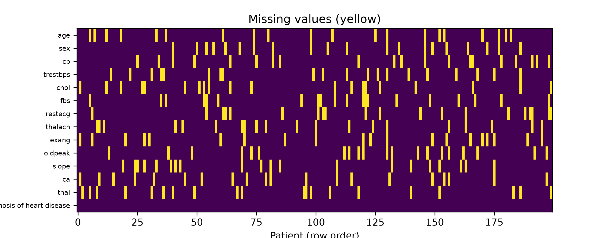